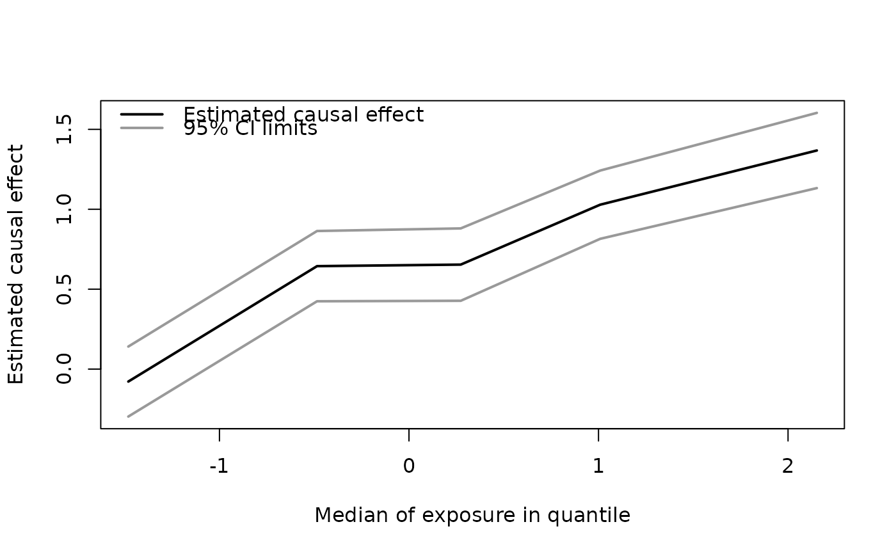

ivxtile() fits an IV estimator within quantile groups of the first stage
residuals (equivalently of the IV-free exposure), to explore whether the
causal effect varies with the level of the exposure, as described by
Burgess et al. (2014). It is the equivalent of the ivxtile prefix
command in the Stata package ivonesamplemr.
Usage
ivxtile(
formula,
instruments,
data,
estimator = ivreg::ivreg,
nq = 5,
par = NULL,
...
)
# S3 method for class 'ivxtile'
print(x, digits = max(3, getOption("digits") - 3), ...)
# S3 method for class 'ivxtile'
plot(
x,
xlab = "Median of exposure in quantile",
ylab = "Estimated causal effect",
ylim = NULL,
legend = "topleft",
...
)Arguments
- formula, instruments
formula specification(s) of the model, as for the estimator, with a single exposure, e.g.
y ~ x + w | z1 + z2 + w.- data
a data frame containing the variables in the model.
- estimator
the function used to fit the model within each group, e.g.
ivreg::ivreg(),msmm(),lsmm(),tsps(), ortsri(). It must acceptformulaanddataarguments and return an object withcoef()andvcov()methods.- nq
the number of quantile groups.
- par
the name of the parameter to collect from each fit. By default the parameter of the exposure, which is the causal effect on the scale on which it is estimated, for example the log causal risk ratio for
msmm().- ...
further arguments passed to
estimator, e.g.linkfortsps()andtsri()orestmethodformsmm().- x
an object of class
"ivxtile"or"ivmw".- digits
the number of significant digits to use when printing.
- xlab, ylab
axis labels.
- ylim
the y-axis limits. By default the range of the confidence limits, extended upwards to leave space for the legend.
- legend
the position of the legend, as for
graphics::legend(), orNULLfor no legend.
Value
An object of class "ivxtile", a data frame with one row for
each quantile group and the columns quantile, n (the number of
observations), beta (the estimate of par), se (its standard error),
medexposure (the median of the exposure), and lowci and uppci (the
limits of the 95% confidence interval, beta plus and minus 1.96 times
se). If the estimator fails in a group its estimates are NA. The
object has print() and plot() methods.
Details
The first stage linear regression of the exposure on the instruments and
any covariates is fitted in the full data. The observations are then
divided into nq groups by the quantiles of its residuals, defined in the
same way as by Stata's xtile command, and the estimator is fitted within
each group.
The approach relies on an additional assumption, that the effect of the instruments on the exposure is the same in each group (the constant genetic effect assumption). When it is violated the estimates within the groups can be biased (Burgess, 2023).
References
Burgess S, Davies NM, Thompson SG. Instrumental variable analysis with a nonlinear exposure-outcome relationship. Epidemiology, 2014, 25, 6, 877-885. doi:10.1097/EDE.0000000000000161
Burgess S. Violation of the constant genetic effect assumption can result in biased estimates for non-linear Mendelian randomization. Human Heredity, 2023, 88, 1, 79-90. doi:10.1159/000531659
Examples
set.seed(12345)
n <- 5000
z <- rbinom(n, 2, 0.3)
u <- rnorm(n)
x <- 0.5 * z + u + rnorm(n)
y <- 0.5 * x + 0.2 * x^2 + u + rnorm(n)
dat <- data.frame(y, x, z)
res <- ivxtile(y ~ x | z, data = dat, nq = 5)
res
#>
#> Estimates of x within quantiles of the first stage residuals:
#>
#> quantile n beta se medexposure lowci uppci
#> 1 1000 -0.0780 0.1117 -1.4809 -0.2970 0.1410
#> 2 1000 0.6442 0.1121 -0.4850 0.4244 0.8640
#> 3 1000 0.6539 0.1155 0.2732 0.4274 0.8803
#> 4 1000 1.0286 0.1090 1.0088 0.8151 1.2422
#> 5 1000 1.3679 0.1201 2.1520 1.1326 1.6033
#>
plot(res)
